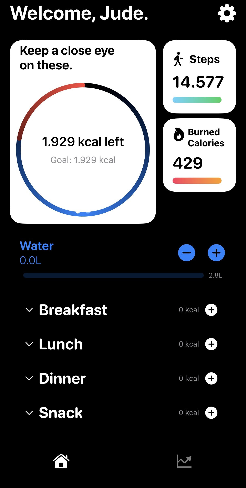
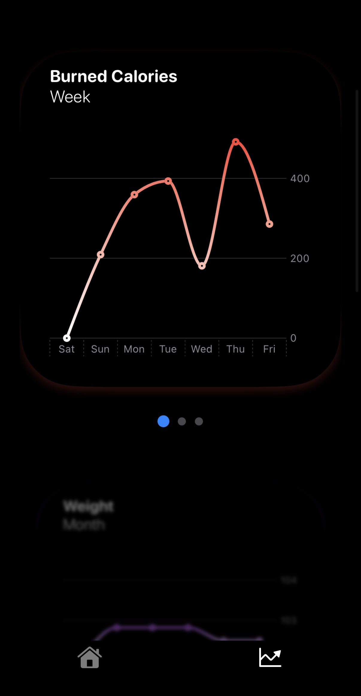

Calorie Tracker App

This app is something I built to make tracking calories feel effortless and actually enjoyable. It’s designed with simplicity in mind — clean UI, smooth navigation, and just the features you need, nothing extra. On this page, I’ll walk you through how the app works, the decisions I made while building it, and some behind-the-scenes insights. Scroll down to check out screenshots and get a feel for the user experience!


Back to Projects